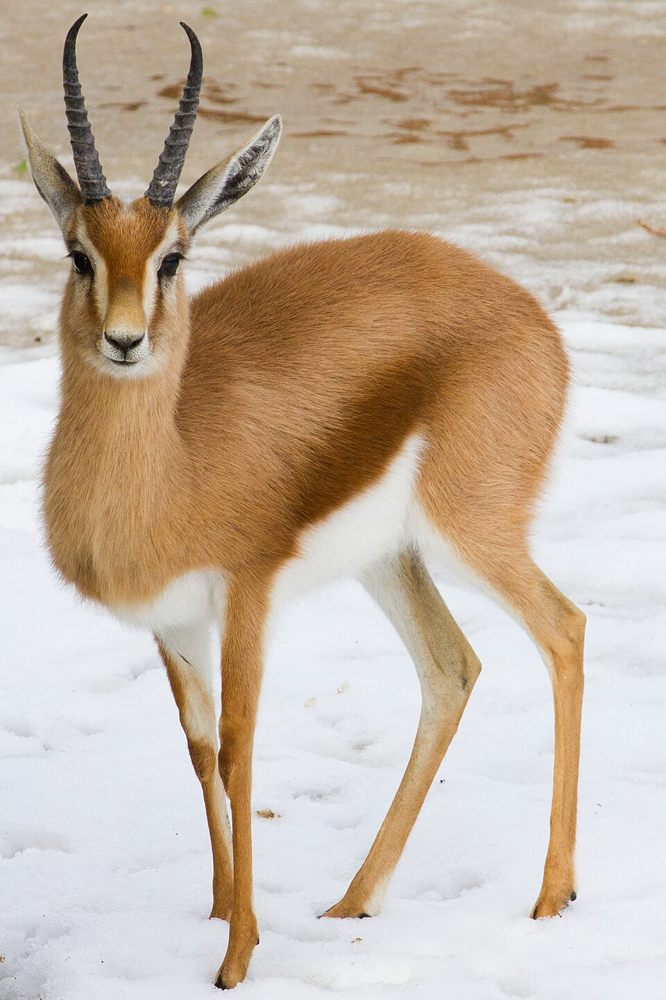

Лев
Лев – це великий хижак, один із символів савани.
Самці відомі своєю розкішною гривою, яка робить їх більш помітними та захищає шию під час боїв.
Леви живуть групами — прайдами, де спільно полюють і охороняють територію.
Вони харчуються здебільшого травоїдними тваринами: зебрами, антилопами, буйволами.

Слон
Слон – найбільший наземний ссавець савани. Відомий своїми довгими бивнями і хоботом,
який використовує для збору їжі, води та спілкування. Слони живуть сімейними групами під
керівництвом старшої самки. Вони травоїдні, споживають траву, листя дерев і кущів, а їхня
діяльність значно впливає на ландшафт: вони розривають старі дерева, відкриваючи простір для
трав’янистих рослин.

Газель
Газель – це граціозний травоїдний ссавець савани, відомий своєю швидкістю та спритністю.
Вона невелика за розміром, з витонченими ногами та вигнутими рогами, які є у самців і частково у самок.
Газелі живуть стадами, що допомагає захищатися від хижаків, таких як леви та гепарди.
Вони харчуються травою та листям, і їхній рухливий спосіб життя допомагає виживати в умовах тривалої
посухи та відкритих просторів савани.